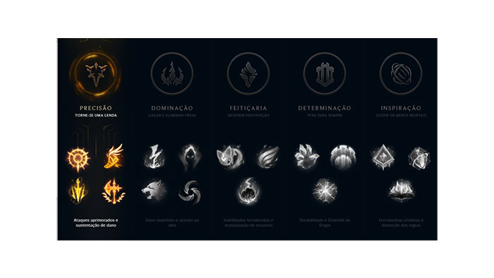
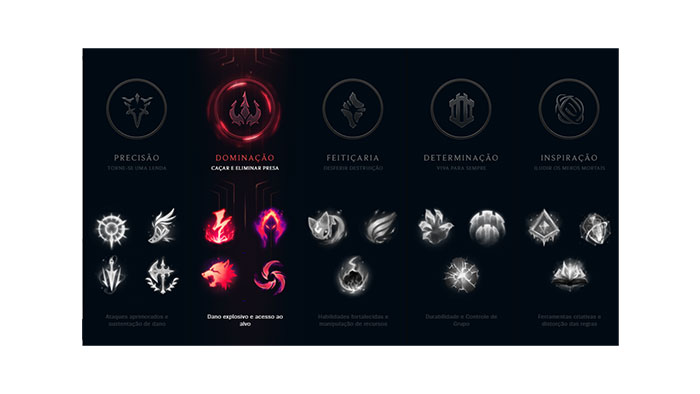
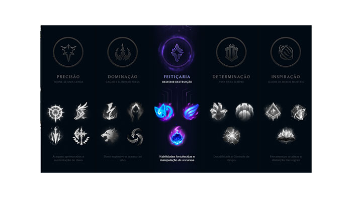
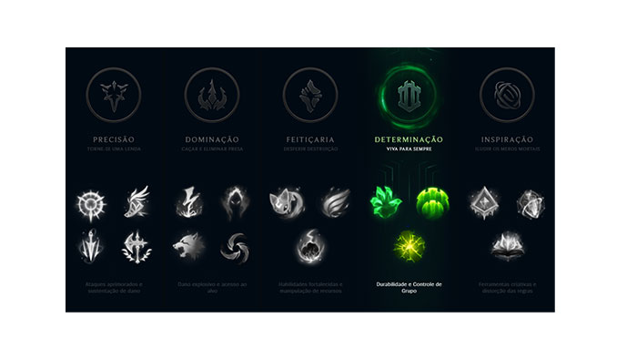
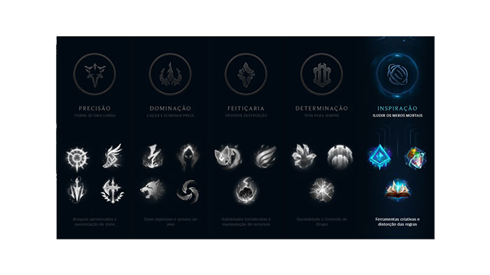

As runas são um grupo de habilidades extras que um jogador pode adicionar ao seu campeão antes do início de uma partida. Atualmente, elas se dividem em 5 grupos diferentes, os quais vão ser detalhados a seguir.
É importante ressaltar que como regra geral não existe um conjunto de runas pré definidos para cada personagem, cabendo ao jogador experiente defini-las de acordo com as condições de cada partida. Contudo, não se assuste, a maioria dos campeões não varia tanto em relação as runas que usa e existem sites que lhe dizem a melhor escolha de runas que você pode fazer para seu campeão, como o League Of Graphs.
PRESSIONE O ATAQUE: seus ataques básicos contra campeões inimigos acumulam e causam dano de 40 a 180 dependendo do nível. Os ataques precisam ser consecutivos e em um espaço de até quatro segundos. Além disso, os campeões inimigos sofrem de 8 a 12% de dano adicional.
AGILIDADE NOS PÉS: esta runa concede acúmulos de energia ao atacar ou andar pelo mapa. Após 100 acúmulos, seu próximo ataque básico cura de 3 a 60 de vida (dependendo do nível), e aumenta a velocidade de movimento em 20% por um segundo.
RITMO FATAL: após causar dano a um inimigo, garante 40 a 110% de velocidade de ataque durante três segundos. Além disso, atacar um campeão inimigo enquanto o efeito está ativo aumenta a duração dele.
CONQUISTADOR: gera um acúmulo de até 6 de dano por cinco segundos com campeões de longa distância e oito segundos para campeões corpo a corpo. Após cinco acúmulos, 8% do dano é aplicado em dano verdadeiro, curando seu campeão na mesma quantidade de dano causado.

ELETROCUTAR: atacar um inimigo três vezes em até três segundos causa de 30 a 180 de dano adicional de acordo com o nível do campeão.
COLHEITA SOMBRIA: aumenta o dano causado em campeões com menos de 50% de vida em 20 a 60, dependendo do nível.
PREDADOR: transforma as botas em um item ativo. Ao ativar, garante 65% de velocidade de movimento durante um segundo e meio, diminuindo para 45% por 15 segundos, que é cancelado após qualquer ataque básico ou habilidade.
CHUVA DE LÂMINAS: após três ataques básicos consecutivos, concede 110% de velocidade de ataque nós próximos três ataques básicos.

INVOCAR AERY: Concede um ajudante que causa dano ao inimigo e garante um escudo ao retornar. Para invocar Aery basta atacar um inimigo com qualquer habilidade ou ataque básico. Além disso, qualquer escudo, buff ou cura é potencializado por Aery por meio de um escudo.
COMETA ARCANO: Ao atacar um campeão, dispara um cometa que causa dano adicional. É possível desviar do asteroide. O cometa tem tempo de recarga longo (até 8 a 20 segundos), mas é forte quando combinado com habilidades que causam lentidão.
ÍMPETO GRADUAL: concede até 40% de velocidade de movimento e 75% de resistência a redução de velocidade após atingir um inimigo três vezes dentro de três segundos.

APERTO DOS MORTOS-VIVOS: causar ou receber dano garante acúmulos ao campeão. Ao reunir quatro acúmulos, o próximo ataque causa dano mágico extra de 4% de sua vida máxima, além de recuperar 2% de vida e aumentar permanentemente sua vida máxima em 5 pontos.
PÓS-CHOQUE: concede aumento de armadura e resistência mágica por dois segundos e meio ao imobilizar um campeão inimigo. Após esse período, causa dano mágico em área baseado em sua vida máxima.
GUARDIÃO: oncede um escudo e 20% de velocidade de movimento por um segundo e meio se seu campeão ou um aliado próximo sofra seja atingido por campeões inimigos.

APRIMORAMENTO GLACIAL: com essa runa, ataques básicos reduzem a velocidade de movimento do inimigo por dois segundos.
LIVRO DE FEITIÇOS DESLACRADO: essa runa permite trocar um dos feitiços de invocador após seis minutos de partida.
PROTÓTIPO: ONIRRUNA: permite que o campeão alterne entre diferentes runas essenciais dentro de partida, que são selecionadas pelo jogo de acordo com a situação que ele se encontra.

Além das runas que foram apresentadas, cada classe também possui runas secundárias. Ao montar sua página de runas, o jogador deve selecionar uma das runas principais apresentadas, três runas secundárias na mesma classe da principal e duas runas secundárias de uma outra classe, que juntas o auxiliarão no decorrer da partida.
Além disso, ao montar sua página de runas também é possível selecionar três atributos extras, que se você não sabe o que significa, será melhor explicado em Atributos.